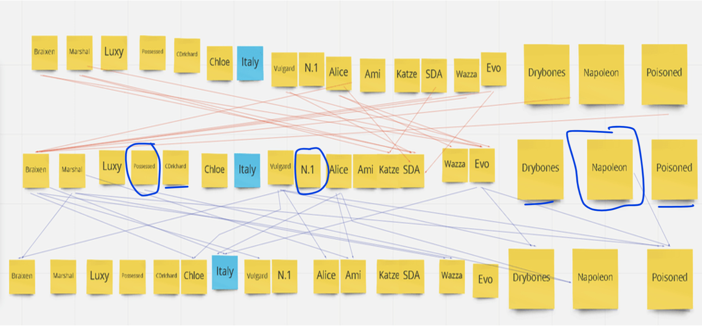

yeah but our mystic!
Rather, King is very replaceable.
Uhhhhhhhhhhhhhhhhh
Good King is useless*
Luxy claimed his bleed in his second post, so if the bleed is real then they didn’t do it because they read his as a GK.
Only starting good king has a one time use of making a selected BD unconvertable.
Evil King is god tier.
You wouldn’t be the first and you wont be the last
Statistically, Luxy’s about twice as likely as being a GK than an EK, so the calculus is not this simple. I’m still for healing him the night after today if he acts like a GK.
Yeah that’s what I’m saying so it’s extremely doubtful that if he was bled that scum did it because they townread him

im kinda sad ppl aren’t pressuring the circle’d ppl.
i want to see more pressure on them. N to a lesser extent, i guess he could be underlined
underlined ppl i don’t scumread but i would like pressure on
No. Bleeding Kings die.
Starting evil king can tailor someone as BD for the entire game. That’s even better than MM passive which tailors them only until N4.
If you heal a starting king, you give an alibi to scum.
No. No no no no no.
if its an unseen game crichard just townslipped hard
 op
op
is it until n3 now?
i think its all game now
They are tailored as the class they pick - all game im pretty sure
Unless im a dummy
oh what the fuck
bruh unseen OP as shit
1 Like